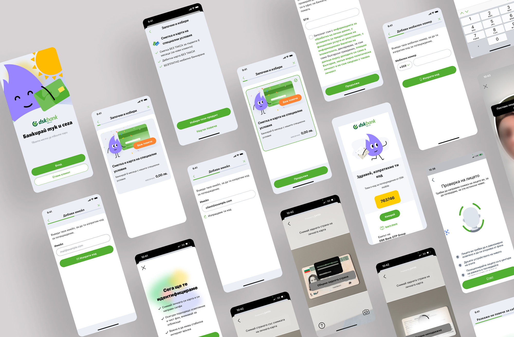
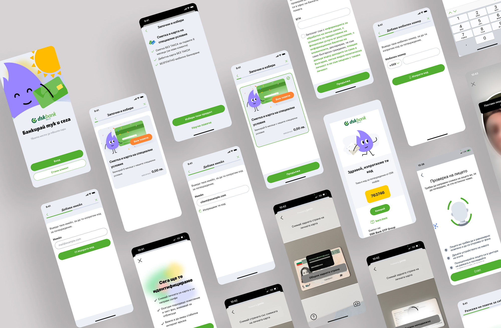
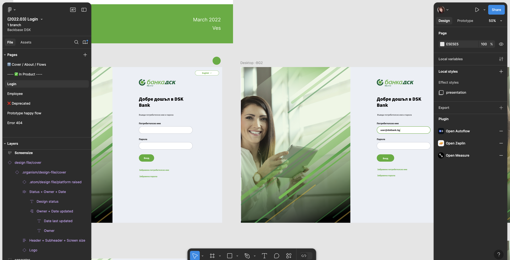

Responsive and mobile app design and implementation
Mobile app
 



UI implementation, Creating, enriching and working with design systems is crucial when team of designers work together

Our team of Graphic Designers and UX/UI Designers is responsible for delivering high-quality designs and developing ready-to-use screens. They are proficient in working with Design Systems and are capable of producing creative ideas.
Good communication and technical skills are crucial. Designers serve as a vital link between developers and business roles.
Knowing “the Client”, is of highest importance

To verify design decisions we have to go trough usability testing and analyze results often. In order to keep consistency, PO`s and Dev teams must confirm if design can be implemented as it planned

Key Responsibilities
Design Systems:
Develop and maintain design systems that ensure consistency across all products.
Create reusable components and guidelines that streamline the design process.
Design for multiple platforms, including web, iOS, and Android.
Ensure that the user experience is seamless across different devices and operating systems.
Device Design:
Adapt designs to fit various screen sizes and resolutions.
Optimize user interfaces for different devices, ensuring a responsive and adaptive design.
Problem Solving:
Identify user pain points and design solutions that address these issues.
Use data and user feedback to iterate and improve designs continuously.
Team Player
Collaborate closely with developers, product managers, and other stakeholders.
Participate in design reviews and provide constructive feedback.
Using Contemporary Approaches in Design and Technologies:
Stay updated with the latest design trends, tools, and technologies.
Implement modern design practices such as responsive design, mobile-first design, and accessibility standards.
Communication with Stakeholders:
Present design concepts and prototypes to stakeholders.
Communicate the rationale behind design decisions clearly and effectively.
Gather and incorporate feedback from stakeholders to refine designs.
Skills and Tools
Prototyping Tools: Figma, Sketch, Adobe XD
Design Software: Adobe Creative Suite Photoshop, Illustrator
User Research Tools: UserTesting, Maze app
Collaboration Tools:
Jira, Confluence, Azure
- © Vesselina Skumova 2024
- Design: HTML5 UP